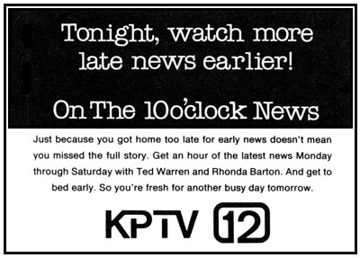

|
|
L O C A L P R O G R A M S |
The 10 O'Clock News (1970 -
1979)
The 10 O'Clock News team, circa 1971: Don Stellges
(anchor),
Michael Hartfield (anchor), Victoria Fuller (weather), Jimmy Jones
(sports).
Michael Hartfield reported the day's events from a news podium.
TV Guide Ad, September 5, 1975.

The 10 O'Clock News team, 1976: Trish Moss (weather),
Sylvia Stinson (anchor), Ted Warren (anchor),
Jimmy Jones (sports).
In addition to his news duties, Jimmy Jones also called the
plays
for Portland Trail Blazer basketball games, Buckaroo hockey,
and Beavers baseball.
Trish Moss, then known as the "weather
girl" points out a cold
front.
TV Guide Ad, December 13, 1976, featuring anchors Sylvia
Stinson and Ted Warren.

The same team, with the
lovely mountain background and
simulated woodgrain desk. If you couldn't tell this was news
from the Northwest, you weren't paying attention.

Remember when weather forecasters had to
write the
temperatures on the board? Seems like forever ago!

TV Guide Ad, September 4, 1978.
News open, late 1970s. The clock struck
ten, and spun around
to reveal...
..."The 10 o'clock News," in all
its lime-green glory.


This page last updated on August 17, 2025
|
Yesterday's KPTV Website design and content ©2003-2025 by Ron Dunevant, LLC unless otherwise noted. |